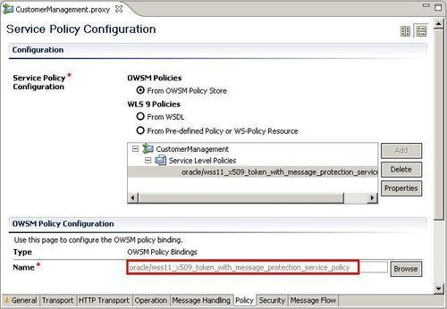

In this recipe, we will also use the message protection similar to the previous recipes but replace the username/password authentication with a client certificate authentication. For this, we need to generate a client certificate and add the public key of the client certificate to the server Java keystore. This way, OWSM can verify the client signature which is added to the SOAP message.
For this recipe, we will use the same simple OSB project as in the previous Securing a proxy service using username and password authentication through OWSM recipe.
Import the getting-ready project into Eclipse OEPE from \chapter-11\getting-ready\securing-a-proxy-service-with-cert-auth-and-msg-protect.
The steps to execute in this recipe are the same as in the previous Securing a proxy service using username and password authentication through OWSM recipe, only another policy needs to be selected. In the Eclipse OEPE, perform the following steps:
proxy folder of the securing-a-proxy-service-with-cert-auth-and-msg-protect project. *x509* into the Name field and click Search.
Instead of the oracle/wss11_x509_token_with_message_protection_service_policy we could also use oracle/wss10_x509_token_with_message_protection_service_policy on this proxy service.
Now, we have to generate a client certificate and exchange the public certificates of the client and the server. Open a command line window and perform the following steps:
bin folder of the JDK used by the OSB:cd c:\[FMWHome]\jrockit-jdk1.6.0_20-R28.1\bin
client as common name (CN) attribute and store it in the client_2.jks keystore:keytool -genkey -alias clientKey -keyalg "RSA" -sigalg
"SHA1withRSA" -dname "CN=client, C=US" -keypass welcome
-keystore c:\client_2.jks -storepass welcome
keytool -exportcert alias serverKey -storepass welcome keystore
c:\server.jks file c:\server.cer
keytool -import -file c:\server.cer -alias serverKey -keystore
c:\client_2.jks -storepass welcome -keypass welcome
keytool -exportcert -alias clientKey -storepass welcome -keystore
c:\client_2.jks -file c:\client_2.cer
keytool -import -file c:\client_2.cer -alias clientKey -keystore
c:\server.jks -storepass welcome -keypass welcome
server.jks located at c:\ to the config\fmwconfig folder of the OSB domain:cd ..\..
cd user_projects\domains\osb_cookbook_domain\config\fmwconfig
copy c:\server.jks .
Next we have to add the user called client to the myrealm security realm of the WebLogic server. The name of the user must match with the common name (CN=client) of the client certificate.
In the Service Bus console, perform the following steps:
client into the User Name field and welcome1 into the New Password and Confirm Password fields.The password of the client user is not important because we will use the public key of the client certificate to verify the SOAP signature.
We can use the next recipe, Using JDeveloper to test a secured service to test the implementation.
The X509 Token authentication together with message protection policy authenticates the service consumer using a client certificate.
The public key of the server is used to encrypt the SOAP body and the private key of the client is used to sign the SOAP body. The signature of the SOAP message can be verified by OWSM because it has the public key of the client and OWSM will use the private key of the server to decrypt the SOAP body.
The common name of the client certificate is also checked against the users of the WebLogic security realm.